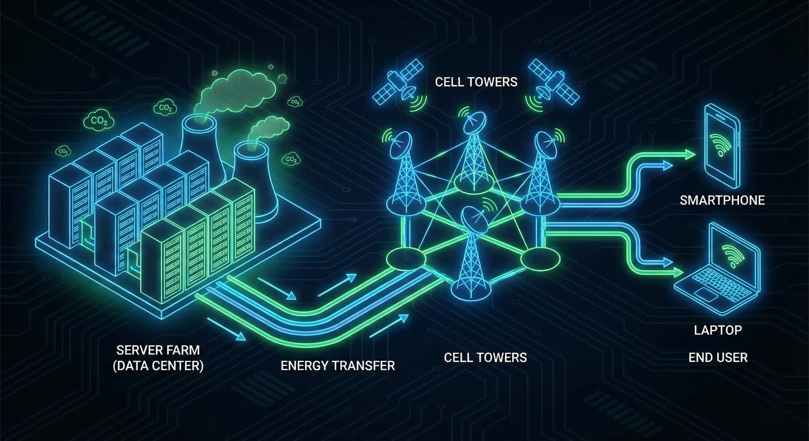
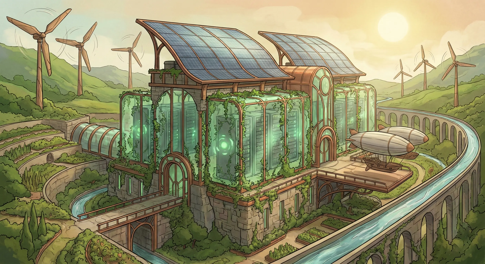
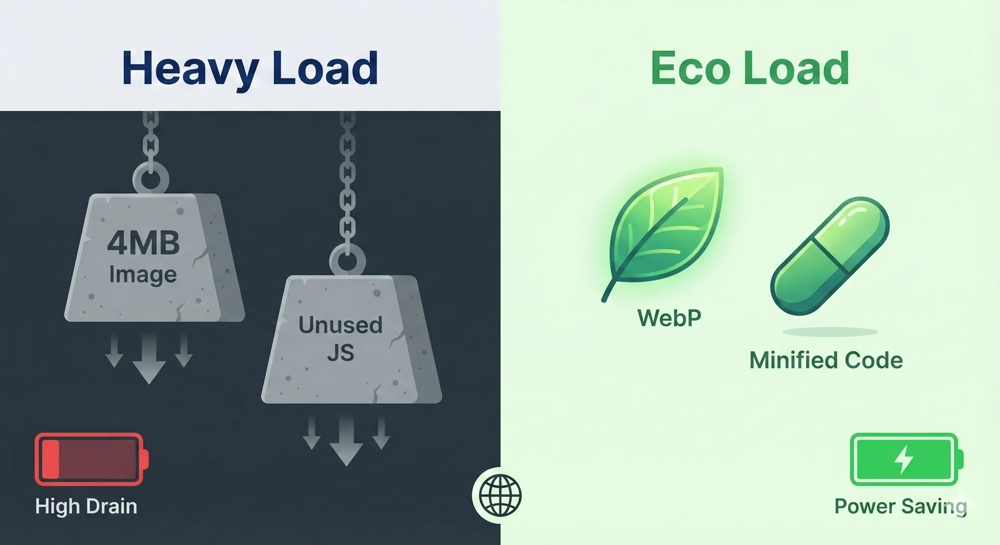

We usually picture pollution as smog from factories or traffic jams, not a line of JavaScript. But the internet is responsible for nearly 4% of global greenhouse gas emissions—about the same as the airline industry.
While earning my certification from the Bureau of Energy Efficiency (BEE), I realized something that changed how I code: developers aren't just building apps; we are architecting energy consumption.
Table of Contents
The Digital Carbon Footprint: An Invisible Polluter
Every click, stream, and API call triggers a chain of energy consumption. It happens in three stages:

- Data Centers: These facilities store our data and run our apps. They guzzle electricity, not just to power the servers, but to keep the cooling systems running 24/7.
- Network Infrastructure: Moving data isn't free. The routers, switches, and miles of cables transmitting packets across the globe consume significant power.
- End-User Devices: Your phone, laptop, or desktop. Inefficient software drains batteries faster, forcing users to charge more often and increasing the load on the grid.
Our code impacts all three. A bloated app makes servers work harder, clogs the network, and kills battery life. That inefficiency translates directly to carbon emissions.
Green Software Engineering: A Developer's Responsibility
Green Software Engineering isn't just a buzzword; it's a discipline for building sustainable apps. It relies on a few core principles:

- Carbon Efficiency: Use the least amount of energy possible. Write efficient algorithms, minimize data transfer, and stop wasting CPU cycles.
- Energy Proportionality: A server should only burn power when it's actually working. An idle server shouldn't be a power hog. This is why I prefer architectures like serverless.
- Hardware Efficiency: Write software that runs well on older devices. If your app forces someone to upgrade their phone, you're contributing to e-waste.
Practical Steps for Building Greener Software
The best part? Green coding is usually just good coding. Efficient code reduces energy consumption, but it also makes your app faster and cheaper to run.
Front-End Optimizations
The front-end is where we directly impact the user's battery life.
- Image Optimization: Use WebP or AVIF. They can reduce image sizes by 90% compared to JPEG or PNG without visible quality loss.
- Lazy Loading: Don't load what the user can't see. Loading images only when they scroll into view saves data and processing power.
- System Fonts: Custom fonts are heavy. Using system fonts (like Arial or Roboto) skips the download entirely, speeding up the site.
- Minimizing JavaScript: Every line of JS has to be downloaded, parsed, and executed. Reduce bundle sizes, tree-shake unused code, and avoid massive libraries to cut CPU usage.

Back-End Optimizations
On the server, efficiency means lower cloud bills and a smaller carbon footprint.
- Efficient Database Queries: A bad query can scan millions of rows unnecessarily. Use proper indexing to keep CPU usage low.
- Caching: Don't compute the same thing twice. Store frequently accessed data in Redis to drastically reduce database load.
- Serverless Architectures: Platforms like AWS Lambda run code only when needed. If no one is using your app, it consumes zero resources. That is energy proportionality.
Infrastructure Choices
Where your code lives matters. Traditional data centers are energy sinks. Choosing a cloud provider that runs on renewable energy (wind or solar) is one of the easiest, most impactful decisions a developer can make.
The Role of IoT and AI in Conservation
Software is also the brain behind active conservation. IoT devices like smart thermostats use simple scripts to automate usage, ensuring systems only run when needed. On a larger scale, AI algorithms can predict energy surges and balance grid loads, helping to integrate renewable sources more effectively.
However, AI is a double-edged sword. Training large models burns massive amounts of energy. Our challenge is to build efficient models where the energy saved by the application outweighs the cost of training it.
My Takeaway from the BEE Certification
Participating in National Energy Conservation initiatives opened my eyes to the scale of this problem. It’s not just about turning off lights; it’s about systemic efficiency. I realized my role isn't just to ship features, but to ship them responsibly. This experience changed how I work:
- Designing with efficiency in mind: I implement features like dark mode (which saves battery on OLED screens) and prioritize performance metrics from day one.
- Advocating for sustainability: Whether it's choosing a green host or pushing back against bloated features, developers have a voice. We should use it.
- Continuous learning: Green software is evolving fast. Staying updated on tools to measure and reduce energy consumption is now part of the job description.
Conclusion
Technology and sustainability shouldn't be enemies. As I build my portfolio, I'm redefining "performance." It’s not just about speed anymore; it’s about sustainability.
The code we write today dictates the energy we consume tomorrow.
Further Learning
To dive deeper, check out the Green Software Foundation. Let's build a sustainable future, one line of code at a time.
Disclaimer: This article was written and edited by Pranav R. AI tools were used for assistance with drafting and visual assets.